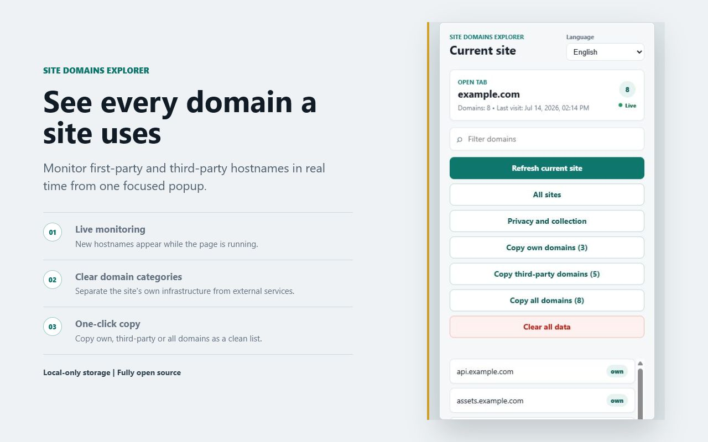

Near-real-time monitoring
New request destinations appear while the current page and its frames are active.
Open-source browser extension
Monitor the first-party and third-party hostnames a website uses in near real time, then search, inspect, categorize, and copy the results locally.
Current-site view
Results update while the page is active, with separate controls for first-party, third-party, and complete hostname lists.

Version 1.0.1
Network events, Resource Timing, page attributes, stylesheet references, and packaged dynamic-request observers work together for broad hostname discovery.
New request destinations appear while the current page and its frames are active.
Hostnames are separated into the site's own infrastructure and third-party services.
Copy first-party, third-party, or complete hostname lists with one command.
Expand any visited site, inspect categorized domains, and copy its lists separately.
Collection requires explicit consent and saved history can be deleted at any time.
English, Spanish, German, Brazilian Portuguese, Russian, Ukrainian, and French.
Cross-browser Manifest V3
A shared WebExtensions codebase uses the background environment supported by each browser, while store packages retain platform-specific manifests.
Chrome and Chromium-based browsers version 102 or later.
site-domains-explorer-1.0.1.zip
Firefox desktop 140 or later and Firefox for Android 142 or later.
site-domains-explorer-firefox-1.0.1.zip
Developers can build both validated packages with ./build.ps1. The
repository root also contains a cross-browser manifest for direct source testing.
Privacy documentation
The policy explains stored data, permissions, retention, user controls, security, and the open-source commitment.